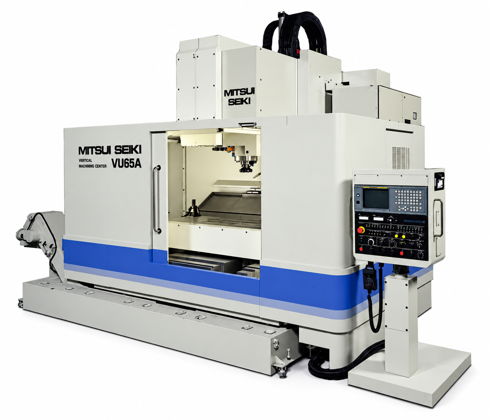
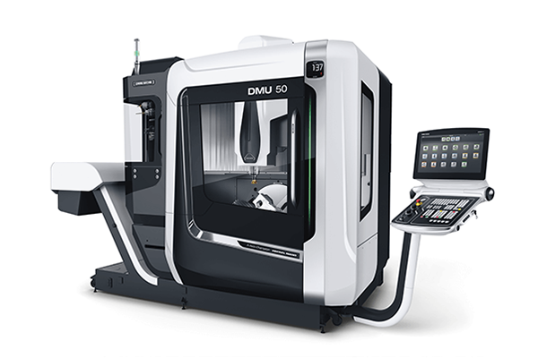
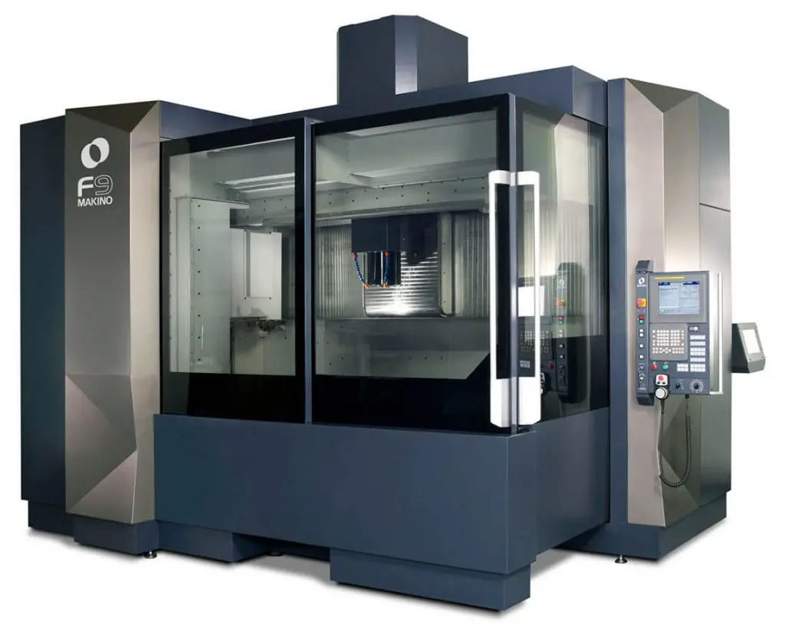
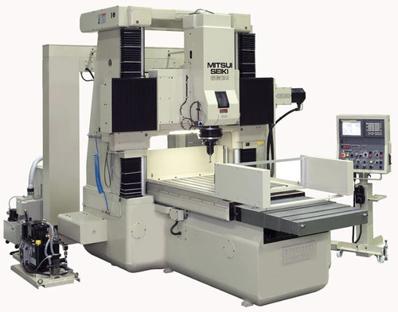
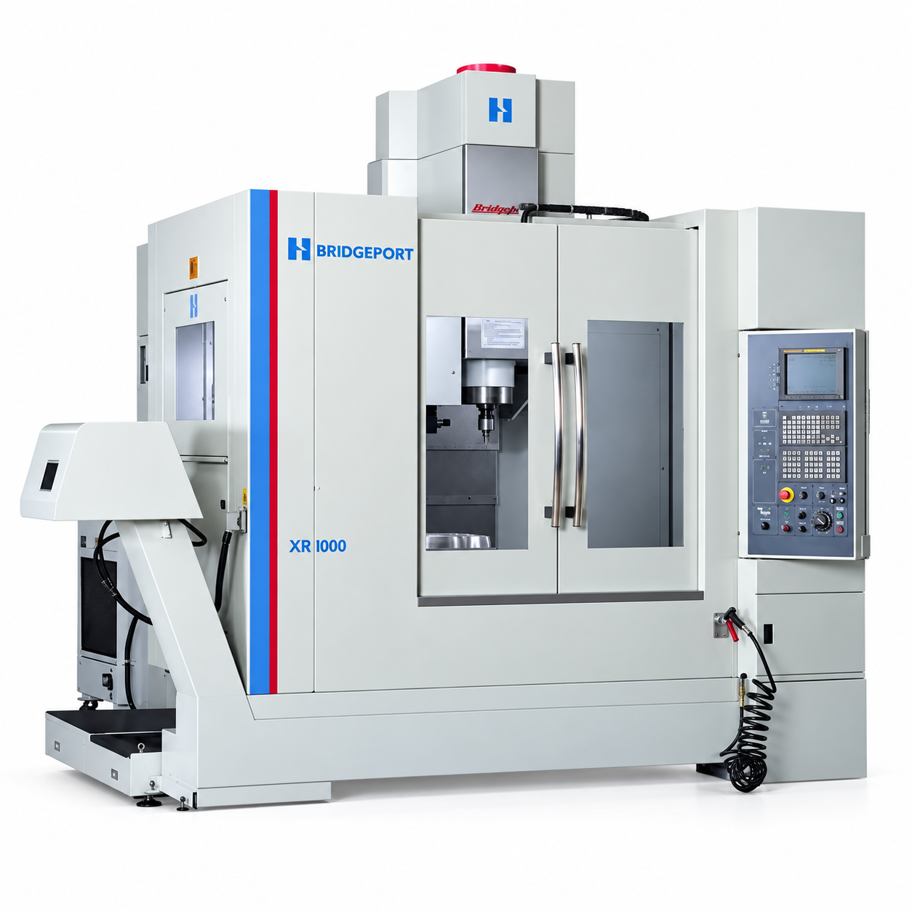
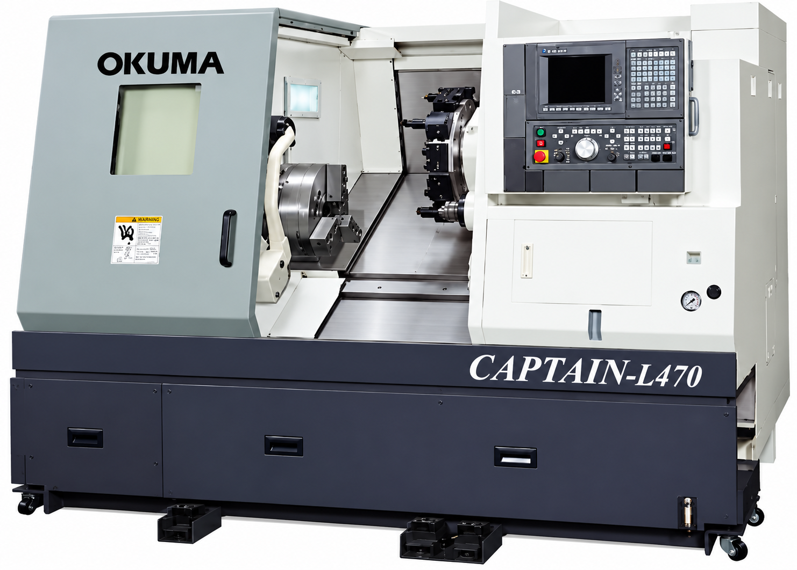
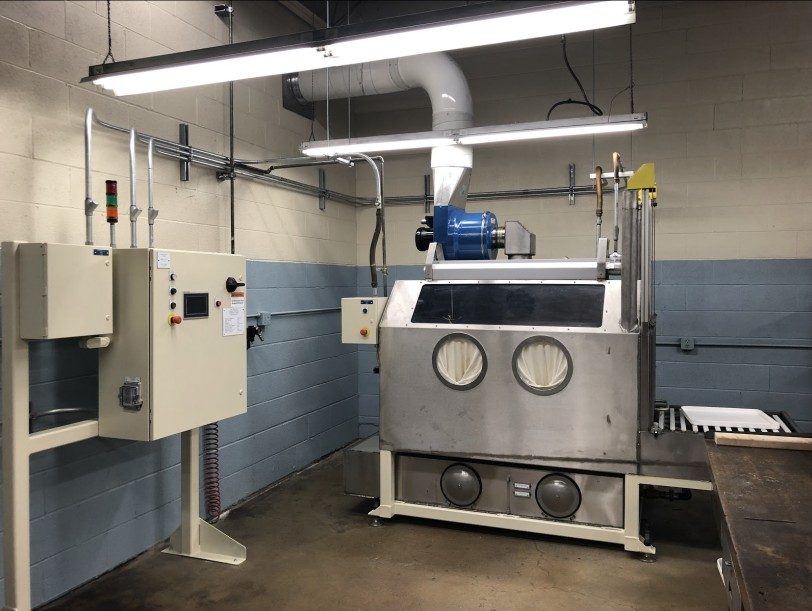
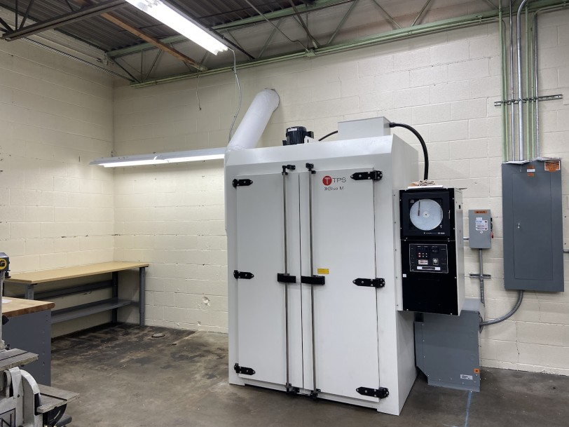
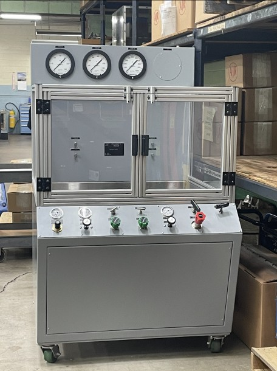

Equipment
The machines behind the precision
5-axis machining centers, jig borers, turning equipment, CMMs, and specialized aerospace process equipment.
Equipment specifications
Machine sizes for application planning
Compare AJR’s listed machine sizes, quantities, and configurations. Dimensions are in inches and retain the order shown in AJR’s equipment listing.
CNC department
Machining, turning & jig boring
| Machine / quantity | Listed machine size | Configuration / details |
|---|---|---|
| Mitsui-Seiki VU65A2 machines · 5-axis CNC machining |
|
60-tool changer |
| Mitsui-Seiki VU65A1 machine · 5-axis CNC machining |
|
60-tool changer |
| Mitsui-Seiki 6CN Jig Bore3 machines · Vertical CNC jig boring |
|
5-axis listing · Automatic tool changer Also captioned “Mitsui Seiki 6N Jig Bore” in AJR’s equipment gallery; confirm model designation. |
| Makino D800Z1 machine · 5-axis machining center |
|
120-tool changer |
| DMG Mori DMU 501 machine · 5-axis machining center |
|
60-tool changer |
| Makino F91 machine · Vertical machining center |
|
60-tool changer |
| Bridgeport / Hardinge XR 10001 machine · 5-axis machining |
|
No additional configuration listed. |
| Makino FNC 741 machine · CNC vertical machining center |
|
No additional configuration listed. |
| Okuma Howa Captain L4701 machine · CNC turning center |
|
No additional configuration listed. |
| Leblond Makino Baron 251 machine · CNC lathe |
|
No additional configuration listed. |
| SIP #5E Jigbore2 machines · Jig boring |
|
Rotary tilt table |
| Mori-Seiki MR2000G1 machine · Lathe |
|
No additional configuration listed. |
| Mori-Seiki MG9151 machine · Lathe |
|
No additional configuration listed. |
| Bridgeport Vertical Milling Machines3 machines · Vertical milling |
Contact AJR for dimensions. |
Digital readout · One machine with slotting attachment |
Quality control equipment
Coordinate measurement systems
The CMM dimensions below are published as machine sizes. Confirm the required measuring range with AJR.
| Machine / quantity | Listed machine size | Configuration / details |
|---|---|---|
| Mitutoyo CMM Strato 9101 machine · Coordinate measurement |
|
No additional configuration listed. |
| Mitutoyo CMM CRT-Apex 71061 machine · Coordinate measurement |
|
No additional configuration listed. |
| Mitutoyo CMM CRT-Crysta 91061 machine · Coordinate measurement |
|
No additional configuration listed. |
Specialized equipment
Purging, testing & thermal processing
| Machine / quantity | Listed machine size | Configuration / details |
|---|---|---|
| D.E. Smith High-Pressure Purge Machine1 machine · Internal-core purging |
Contact AJR for dimensions. |
10-micron and 2-micron filtration for internal cores of castings |
| Staley Pressure-Test Rigs2 machines · Aerospace housing pressure testing |
Contact AJR for dimensions. |
Published rating: up to 10,000 LBS. Confirm pressure units and operating rating with AJR. |
| Blue M (TPS) Ovens2 machines · Thermal processing |
Contact AJR for dimensions. |
Thermal-fit liners and stress-relief parts |
Equipment gallery
Machining, inspection & processing
Photographs from AJR’s equipment lineup. Select a photograph to view it at full size.




















Manufacturing support
Programming & shop-floor systems
CAD / CAM
Shop-floor management
AJR uses a Dell computer network and Epicor Vista for shop-floor management.
A 22,000-square-foot, temperature-controlled facility supports the company’s manufacturing operations.